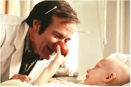

Contents | Features | Reviews | Books | Archives | Store |
 |
|
| Movie Credits | Buy It! |
Patch Adams
Review by Elias Savada
Posted 25 December 1998
| Directed by Tom Shadyac. Starring
Robin Williams, Daniel London, Written by Steve Oedekerk, based on a book |
After the fiasco of his last nightmarish concoction, Robin Williams’ latest is a big step up the medical chain (he again plays a doctor). He gets to live in this one. And laugh. It’s a genuine, heartwarming crowd pleaser, although director Tom Shadyac can be seen disgorging heapings of sentimental claptrap over this biographical landscape, based on the true story of Hunter "Patch" Adams. Be warned, if you don’t catch yourself (you might not want to), you’ll end up with an oversized lump, possibly contagious, in your throat. Patch Adams is an extra large dose of heal thyself mixed with a clownish sense of humor, a drop of love potion, and a spoonful of sugar (it does make the medicine go down). Just right for the holidays and just what the doctor ordered -- for you, and possibly for Universal Pictures, drastically in search of a hit after dismal outings from Meet Joe Black, Babe: Pig in the City, and Psycho.
Williams, a versatile fellow who can fill a good role with compassion, intelligence, and wit (Good Will Hunting; Dead Poets Society; Awakenings; Good Morning, Vietnam), has also managed to lay an egg or three (What Dreams May Come, Jack, Being Human). Director Shadyac and writer Steve Oedekerk, who left a stamp on the comedy landscape with their Ace Ventura films and The Nutty Professor, are smart enough to let Williams fly with the material, loosely structured on a former mental patient turned unconventional medical school student. Out of 163 indifferent enrollees in his class at Virginia Medical University in the 1970s, Patch is the only one who (initially) doesn’t suck up the god-fearing disposition instilled by Dean Walcott (Bob Gunton) that doctors minimize their distance from their patients. Gunton, a Vietnam vet, imbues his anal-retentive character with a Pattonesque, colon-blocking authoritarianism ("Our job here is to ruthlessly drain the humanity out of you and make something better out of you…we’re going to make you doctors."), which also makes him an easy target for Patch’s barbed humor. Gunton, often pigeon-holed for similar roles throughout a lengthy career, still holds a renown place on my video mantel for his turn as pivotal nemesis Warden Norton in The Shawshank Redemption.
The film follows our suicidal lead from his 1969 self-committal in a North Virginia mental hospital, to a realization that his psychiatrist is an uncaring bore, and the understanding that his fellow patients, particularly roommate Rudy (Michael Jeter) and math wiz Arthur Mendelson (Harold Gould), offer a empathic glimpse of Patch’s unleashed potential, of seeing beyond the obvious.
Within two years he has found his calling, matriculating in med school, his bunk shared with stiff shirt Mitch the Bitch (Philip Seymour Hoffman of Boogie Nights and Happiness), heir to a physician’s lineage and annoyed by Patch’s flippant attitude and easy grades. Other students brought under Patch’s Svengali-like influence are the nerdy Truman (relative newcomer Daniel London) and Carin (Monica Potter, Nicholas Cage’s wife in Con Air and last seen in the yet-to-see-wide-release Without Limits), an ice queen sounding very much like Julia Roberts who eventually surrenders to Patch’s romantic notions and his non-conformist idea of creating a free clinic that uses humor to cure pain and suffering, of treating patients, not disease.
Also putting in admirable appearances are Harve Presnell (Fargo) as a sympathetic dean and Peter Coyote as an abusive, terminally ill patient who yields to Patch’s angelic charm. As good as the supporting cast is, they are wisely coached to stand in awe of the film’s quarterback. And like any hall of famer, Williams throws lots of hilarious completions, recovers lost fumbles, and does lots of public-service announcements. Williams’ set pieces are many, including a convention crashing episode by which the loquacious Patch endears himself to hundreds of meat packers ("Shanks for the memories") in near- revivalist rapture.
His anti-establishment antics relocate to the children’s ward of the school’s hospital, where an enema bulb and bed pans provide an inspirational laughter and endorphin release for the patients and the audience. Another set-up, again strictly for comedy’s sake, is a wacky piece of set design welcoming a group of visiting gynecologists to campus. A ton of homilies and pontifications later, it’s showdown time for Patch with the authorities, with an ending sure to brighten your day and wet your hanky.
Patch Adams isn’t the best of the year-end batch (honors go to Shakespeare in Love and Waking Ned Devine), but you won’t go home feeling you’ve just had turkey.
Contents | Features | Reviews | Books | Archives | Store
Copyright © 1999 by Nitrate Productions, Inc. All Rights Reserved.